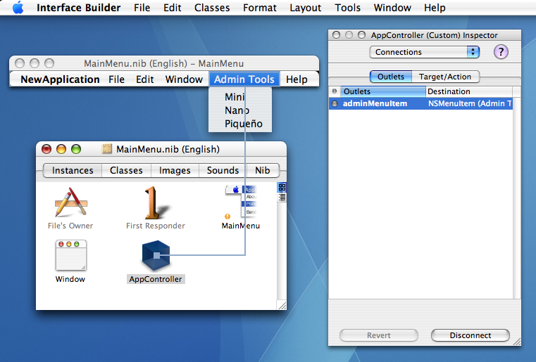

|
Q: How do I add or remove a submenu from a menu in Cocoa?A: Use A "submenu" in Cocoa is just an instance of Note that the application's menu bar itself is an instance of To give an example of adding and removing a submenu, let's assume you want to make an additional submenu of adminstrative tools available based on some condition. Figure 1 shows the addition of an Figure 1: A submenu of administrative items. Note: Although this example uses the application's menu bar, this technique applies equally well to other menus, such as a contextual menu attached to a view. One option is to programatically allocate the "Admin Tools" Figure 2: Connecting the menu outlet in Interface Builder.  The following code shows how to set the initial state by removing the item when the nib file is loaded and provides methods to add or remove it as needed. This example controller preserves the index where the menu is found in Listing 1: Removing the menu initially when the nib file loads. - (void) awakeFromNib {
adminMenuItemIndex = [[NSApp mainMenu] indexOfItem: adminMenuItem];
[self removeAdminMenuItem];
}
Listing 2: Removing the submenu by using its outlet. - (void) removeAdminMenuItem {
[adminMenuItem retain]; // ensure item and its submenu aren't dealloc'd when removed from mainMenu
[[NSApp mainMenu] removeItem: adminMenuItem];
}
Listing 3: Adding a submenu to the application's menu bar. - (void) addAdminMenuItem {
[[NSApp mainMenu]insertItem: adminMenuItem atIndex:adminMenuItemIndex];
[adminMenuItem release]; // maintain accurate retainCount since mainMenu will retain on insert
}
Document Revision History
Posted: 2007-09-10 |
|